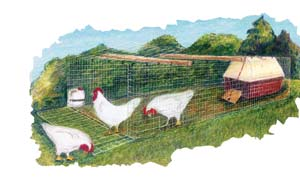
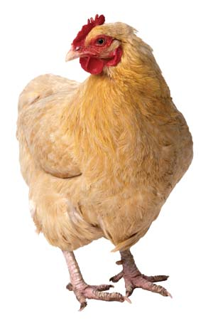
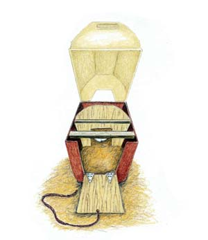

Portable Chicken Mini-Coop Plan
With this unique design, anyone can keep a few chickens, even in small back yards.
By Cheryl Long
April/May 2007
Chickens are every bit as fun and easy to care for as dogs or cats, plus they give you great farm-fresh eggs. The biggest challenge is keeping the birds safe from predators, and at the same time allowing them to enjoy a natural diet of grains, greens and insects.
Most poultry predators roam at night - raccoons, coyotes, owls and such. But hawks and (some but not all) dogs may attack free-ranging birds during the day, especially if there are no humans at home or no guard dog to chase them away. You could keep your birds inside a conventional stationary coop, but then they wouldn’t get to forage for their natural diet and thereby give you the best-tasting and most nutritious eggs. Portable electric mesh fencing can serve as daytime protection in some locations, but not against hawks. Plus, you’ll still need shelter for the hens to sleep in.
To make it easy for anyone to raise a few chickens on pasture, I set out to create a coop design that would be secure, low-cost, easy to build, light enough to move easily and scaled to fit well even in small back yards. After working through several prototypes, the design described below meets all those criteria. It’s intended for three or four hens, costs only about $100 in materials and can be assembled in a few hours from standard welded wire fencing. A barn-style plastic doghouse serves as a henhouse that sits inside the wire pen. The pen and house combo is lightweight and easy to pull to a new location every few days, so you can keep your birds safe but still let them enjoy clean, fresh pasture (or set them over garden beds to help fertilize and control pests).
To make this portable mini-coop, head to your local hardware or farm store and get the following items:
- Barn-style doghouse: the larger the better, but be sure you get the 1-by-2-inch mesh wire fencing for the pen’s side walls (see below) in a height that’s at least as tall as the doghouse you choose.
- 1-by-2-inch mesh welded wire fencing, as tall as the doghouse - 38 feet is enough to make the sides and doors for one 3-by-10-foot pen. This fencing is stiff enough to make sides that support the top and produce a sturdy rectangular wire pen.
- 25 feet of 2-by-4-inch mesh welded wire, 36 inches wide (or 48 inches for a wider pen - see Step 2, below); this is for the top and bottom of the coop. You could use 1-by-2-inch mesh throughout, but the 2-by-4-foot is sufficient, plus it’s lighter and less expensive.
- Two or three boxes of “hog rings” (see photo in the Image Gallery) and the pliers to pinch them closed. I discovered these nifty fasteners at a Tractor Supply Co. store. They are designed to be pierced into pigs’ noses to discourage them from rooting, but they’re perfect for quickly attaching the walls, top and bottom to form a very lightweight all-wire (no wood!) pen.
- If you don’t already have wire cutters or a small bolt cutter, buy a tool that will let you easily cut the wire fencing.
If You Build It, They Will Cluck
Step 1: Bend the 1-by-2-inch mesh fencing to make the sides of the 3-by-10-foot pen.
Step 2: Cut an 11-foot length of the 2-by-4-inch mesh wire, fold 6 inches under on each end (to provide extra stiffness) so you have a section that is 10 feet long. Using the hog rings every 4 to 6 inches, attach the 2-by-4-inch wire section to form a top for the 3-by-10-foot wire rectangle. (I also made one test pen that was 4 feet wide, rather than 3 feet. To prevent the wider top section from sagging, I slipped two 1-by-2-inch wooden “beams” through the top slots in the side walls.)
Step 3: Make another 10-foot section as described above, flip the pen over and install the second section.
Step 4: To make the door openings - one at one end so you can gather the eggs from the henhouse and slide the house out for cleaning, and one at the other end to allow for tending the birds’ food and water containers - cut sections of wire out of each end of the pen to form openings tall and wide enough for the house to slide in and out easily. Bend back all the sharp wire ends.
Step 5: Make the doors - two 3-by-1 1/2-foot flaps of the 1-by-2-inch mesh fencing that hinge up from the bottom and down from the top (use the hog rings to make the “hinges”); the top and bottom flaps will overlap 6 inches in the middle. This door design lets you open only the top flap to reach in for eggs, or open both the top and bottom flaps if you need to slide the coop out. Use bungee cords or whatever fasteners you have on hand to secure the door flaps.
Step 6: To adapt the barn-style doghouse (sold in various sizes at most hardware, farm supply and home improvement stores) first file off the tabs that hold the roof section to the bottom (a wood rasp works well) so that you can easily lift off the roof section when you need to change the bedding. Then install a 1-by-2-inch board as a roost at the top edge of the bottom section, and attach a thin plywood “wall” to a second crosspiece toward the back of the coop (see illustration), with a hole cut in it so the hens can lay their eggs in the “back room” (they like a dark, cozy spot). Put the top section of the doghouse onto the bottom backwards, so you have a large opening in the front and a smaller, higher opening facing the back. This way, you can reach into the back opening to gather eggs.
If you want two coops, you could economize by buying just one doghouse and using both the bottom and top sections as the roofs for two houses, each set onto rectangles made of lightweight, rot-resistant cedar boards.
Step 7: Finally, trace the shape of the front and back henhouse openings, cut plywood doors to fit and hinge them to the openings. I made the front door hinge downward and attached a cord to the top edge (see illustration in the Image Gallery) so I can just pull the cord up to close the door; and I put a small snap fastener on the end of the cord so opening or closing the door takes about five seconds! I thought the wire pens would be fully predator-proof and the birds would not need to be locked inside the house at night, but I learned the hard way that gangs of raccoons can manage to scare young birds out of the house, then reach through the wire and kill them! So, even though the birds naturally go into the house at night to roost, it’s still a good idea to close the door each evening.
More Easy Ideas
We will be posting this portable backyard coop plan on our Web site. If you find ways to improve upon it, or you have other ideas for portable coops, please share your discoveries by posting a comment to the article.
For example, before I discovered the hog rings and developed this wire pen plan, I made a portable coop by adding wheels and a wire “roof” to a chain-link dog kennel. I got a bucket of used lawn mower wheels from a small engine repair shop at no cost, and mounted them on 24-inch-long axles cut from steel rod that I clamped to the four corners of the kennel. For a coop inside the kennel, I used a fiberglass calf hut (sold at farm stores), also on wheels and with a wire floor added to keep out any predators that might dig under the kennel walls. (Or you could use a couple of the barn-style doghouses for the henhouses, set up on crossbeams.) My chain-link chicken “kennel on wheels” works great if you want a larger number of hens than the wire mini-coop can handle.
Mother Earth News Editor in Chief Cheryl Long looks forward to a day when there are chickens in every back yard. She keeps her Welsummer and Jersey Giant hens in the portable pens she designed for this article.
|
 ROBIN WIMBISCUS Mother Earth’s portable henhouse design. |
 PHOTODISC Chickens that have access to fresh pasture produce safer, tastier and more nutritious eggs. |
 ROBIN WIMBISCUS Mother Earth’s DIY affordable, moveable chicken mini-coop. |
 MATTHEW T. STALLBAUMER These hog rings hold the portable chicken pen together. |
|
|